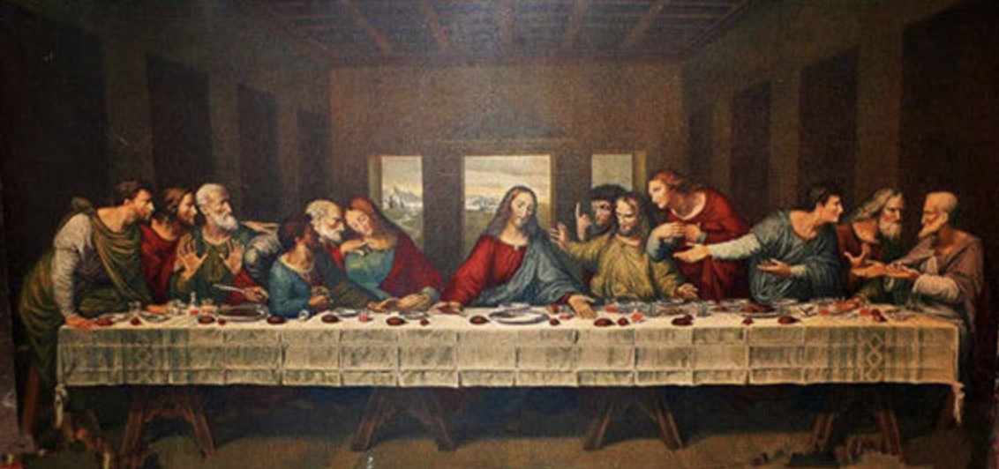

chapter9.1--handout
Background Information
Zoroaster
💧Zoroaster是琐罗亚斯德教（Zoroastrianism或Mazdaism）的创始人，琐罗亚斯德教在汉语中又称拜火教或祆教。
琐罗亚斯德出身于波斯帝国建立前的一个波斯游牧部落贵族家庭，20岁时弃家隐居，30岁时改革传统的多神教创立琐罗亚斯德教，但受到传统教祭司的迫害，直到42岁时，大夏的宰相娶他女儿为妻，将他引见国王，琐罗亚斯德教才在大夏迅速传播，77岁时他在一次战争中，在神庙中被杀身亡。
💧哲学家尼采（Nietzsche）就琐罗亚斯德教教义，创作了《查拉图斯特拉如是说》一书。在书中，琐罗亚斯德被描述为一个“先知”（prophet，纪伯伦有同款作品，语言很美，有兴趣的话读读看哦）
Confucius, Lao-tse, & Buddha (儒释道)
💧提到孔夫子、老子、释迦摩尼佛几位圣人，不难想到影响中国文化深远的儒释道三教：
Confucius开创儒教：曾长期作为中国官方意识形态存在，居于主流思想体系地位；
Buddha（乔达摩悉达多—释迦牟尼佛）创立的佛教，世界三大宗教之一；
Lao-tse老子的《道德经》在后人的传播演化过程中，与庄子（Zhuang Zhou）的《南华经》一起，长期演变成了道教，是中国本土宗教。
下面给大家分享几句经典语录，给你们提供写议论文的素材哈～～
💧Confucius：
What you do not want done to yourself, do not do to others.
己所不欲，勿施于人。
Virtue is not left to stand alone. He who practises it will have neighbours.
德不孤，必有邻。
If a man take no thought about what is distant, he will find sorrow near at hand.
人无远虑，必有近忧。
💧Lao-tse：
What’s most straight appears devious; the greatest skill appears clumsiness; the greatest eloquence seems like stuttering.
大直若屈，大巧若拙，大辩若讷。
He who knows does not speak; He who speaks does not know.
知者不言，言者不知。
Misery—happiness is to be found by its side; Happiness—misery lurks beneath it.
祸兮，福之所倚；福兮，祸之所伏。
All difficult things in the world aresure to arise from a previous state in which they were easy, and all greatthings from one in which they were small.
天下难事，必作于易，天下大事 ，必作于细 。
Jesus
说完了东方宗教的神明，不妨来说一下西方信仰的神明：耶稣（Jesus）是上帝之子（上帝是Yehowah，耶和华），西方文化体系很大一部分是源于宗教，其中很多艺术、文化都源于耶稣（比如纪念耶稣诞生的圣诞节、纪念耶稣受难后三日复活的复活节Easter Day、描绘耶稣和包括叛徒犹大在内的十二门徒的《最后的晚餐》等等）。

文章的引用“Do unto others as you would have others do unto you."「你希望别人怎样待你，你就该怎样去对待别人。」出自圣经马太福音7章12节「登山宝训」(The Sermon on the Mount)的内容，即耶稣在山上的讲道。
Vocabulary
weigh
💧v．to have a heaviness of a stated amount, or to measure the heaviness of an object
动词：称…的重量; 权衡，考虑
💧The scales can be used to weigh other items such as parcels.
这台秤可以用来称包裹等其他物品。
monotonous
💧Adj. not changing and therefore boring
形容词：（声音，话语） 单调的，无抑扬顿挫的; 枯燥无味的
💧It's monotonous work, like most factory jobs
与工厂大部分工作一样，这份工作也很单调乏味。
differentiate
💧to show or find the difference between things that are compared区分，区别，辨别
💧At this age your baby cannot differentiate one person from another.
这个年龄的婴儿还不能认人。
Crush Your Problems
- I'll bet that person went out to lunch that day walking on air.
💧walk on the air 是一个很形象地表达：在空气上走，轻飘飘。也就是形容人非常高兴，走起路来飘飘然，洋洋得意的样子。
💧英语里还有一个相关的表达就是To walk the floor，指一个人在担心一件事的结局如何，或者是他不知道该怎么办，比如一个人非常紧张，坐不住，在屋里走来走去地徘徊的样子。
Eg. My roommate has been walking the floor for weeks trying to decide whether to ask his girl friend to marry him. He loves her, but he's not sure he's ready to settle down and have a family.
💧和我同房间住的那个朋友前思后想了几个星期，考虑到底要不要向他的女朋友求婚。他很爱她，但是他自己也不清楚他现在是否已经准备安家立业了。
- If we are so contemptibly selfish that we can't radiate a little happiness and pass on a bit of honest appreciation without trying to get something out of the other person in return — if our souls are no bigger than sour crab apples, we shall meet with the failure we so richly deserve.
💧这句话非常长，我们来梳理一下结构。主体的结构是两个if条件状语从句加主句：If we are…, if our souls are…， we shall meet with… 第一个条件句里有一个so… that（如此…以至于） 的句型 If we are so contemptibly selfish that we can't radiate… 如果我们如此卑贱自私以至于（或如果我们卑贱自私到如此程度…） 💧without trying to get something out of the other person in return在这里做伴随状语。in return 表示作为回报，翻译过来就是不从别人那里得到点什么。这里要注意，英语的语序和汉语的语序不一样， so…that..在英语句法上是联系非常紧密的，状语从句放在后面。但翻译成符合我们表达习惯的汉语时，我们把状语放在了that we can’t radiate…之前
💧这句话整个的理解就是：假如我们是那样的卑贱自私，不从别人身上得到什么，就不愿億分给别人一点快乐，如果我们的气量比一个酸苹果还小，那我们所要遭碰到的，也绝对是失败。
💧相信你也认同卡叔的观点，很多时候不要吝惜赞美或者感激，给别人带去快乐是很美好的事情～
- It is this urge that differentiates us from the animals. It is this urge that has been responsible for civilization itself. 人与动物相异之处，就在于自重感的有与无，而人类的文化也由此而起的。
💧这里给大家讲讲强调句，其构成是：
It is (was)+被强调部分+who (that)...
💧一般说来,被强调部分指人时,用who;指事物时用that,但that也可以指人。在美国英语中指事物时常用which来代替that。
Eg. It was because she was caught in the rain yesterday that she fell ill.
强调原因：是因为她昨天淋雨了，她才病倒的。
💧It was our teachers that(who) went shopping with us yesterday!
强调人：昨天是老师们跟我们一去购物的
💧文章这两句it is this urge that…都是在强调this urge（这一欲望）, 即前文提到的渴求为人重视
Content Analysis
今天我们要探讨的是如何让人快速喜欢你。乍看这一标题，有些人可能和我一样有些不解甚至有些不屑: You can’t please everyone. Why should I make people like me? 你没办法取悦每一个人，为什么要让人人喜欢我？这样为了得到别人的认可而活岂不很累？
然而仔细阅读，会发现卡叔的出发点并不是让我们成为一个取悦于人的人(a people-pleaser)，也不是要自己得到什么好处。卡叔从生而为人内心最深处的渴求出发(the deepest urge/craving in human nature), 也以身边的例子佐证，提出在人际交往中要真诚的赞美对方(sincere appreciation)，让对方感受到自己受到重视。
排队寄信时观察到一个邮务员(a clerk in a post office)似乎厌烦了单调的工作(he appeared to be bored with the monotonous grin year after year), 于是真诚的夸奖了他的头发，邮务员脸上瞬间露出笑容(his face was beaming with smile), 可能吃饭都是腾云驾雾般轻松的状态(walk on the air)。作者在公共场合提起这件事时，还被人误解是想要从这个邮务员身上得到点什么。他认为如果我们连乐意与人分享快乐不求回报这点气量都没有，我们活该失败(we shall meet with the failure we so richly deserve) 。作者由此引出人的行为的一项重要定律(the all-important law for human conduct)——永远让别人感觉到重要 (Always make others feel important)。从古至今，很多人都如此认为， 文中对此进行了大量的引用。为什么要让别人感觉到重要，这和人最深层的渴求有关。
人最深层的渴求究竟是什么呢？用杜威教授John Dewey的话就是自重的欲望(the desire to be important) ，詹姆斯博士(William James)也所见略同，认为是渴求为人重视(the craving to be appreciated)
最后卡叔又举列子表明让他人感到重要是带有有强大力量的: David 通过分配Jane 和Rose 任务，让她们感觉到被重视有价值，从而化解了一场尴尬。
Today's Bonus
单词记忆小诀窍—熟悉英语构词法
今天的内容中，仔细阅读的宝宝一定有发现不少less结尾的词， 如 priceless, countless, endless
如果我们单独去记忆每个单词的意思会增加我们的记忆负荷，但如果我们对英语的构词法有稍微的了解，就会省事很多。
下面就给大家说三种最基本的英语构词法吧（名字很fancy其实超简单）
- 派生法:就是在词根前加前缀或在其后加后缀构成新词
下面分享几个常见的前后缀（prefix & affix）
否定前缀：
💧anti-（反对，相反，防止）
💧dis-（不，无，相反，取消）
💧in-（通常在b, m, p前用im-，在l前用il-，在r前用ir-不，无，非）
💧mis-（误，错，不）
💧non-（非，无，不）
💧un-（不，无，非，未，取消，相反动作）
eg：
anti-sunburn防晒的
disappearance消失
dishonest不诚实的
illegal非法的
impolite不礼貌的
incorrect不正确的
irregular不规则的
misguide误导
misunderstand误解
non-drinker不喝酒的人
non-English非英语的
形容词后缀： 💧-able（可/能......的）
💧-al（......的）
💧-en（由......制作/构成的）
💧-ern（......方向的）
💧-ful（充满）
💧-ive（倾向）
💧-ish（如......的）
💧-less（没有......的）
💧-ly （外观相似的、有......性质的）
💧-ous（多......的、有......特性的）
💧-some（易于......的）
💧-t （......的）
💧-y （性质）
eg：
comfortable 舒适的
central 中央的
medical 医学的
wooden 木制的
eastern 东方的
peaceful 和平的、安宁的
active 活跃的
childish 孩子气的
careless 粗心的
orderly 有秩序的
mountainous 多山的
troublesome 麻烦的
patient 耐心的
foggy 雾深的、模糊的 - 合成法: 将两个或两个以上的单词连在一起构成一个新词。
eg：
💧sun+rise(升起)=sunrise(日出)
sun+set(落山)=日落
💧trade(交易) + mark(标记)= trademark(商标)
💧father+ in law(依法)= father-in-law 岳父
mother-in-law 岳母
- 转化法： 有些名词可作动词，有些形容词还可作动词、名词或副词。这种保持词形不变，但改变词性的用法就叫作转化法。
eg：
💧interest兴趣（n.）-使......感兴趣（v.）
💧time时间（n.）-给......测量时间（v.）
这些最简单的构词法，可以帮助大家在同类词根（word root）的词中做一些拓展，相信会帮助到你们认识更多单词哦～加油～
今天的最后再送给大家一句Confucius的话来共勉：
Is it not pleasant to learn with a constant perseverance and application?
猜出是什么了吗？
学而时习之，不亦说乎？
要记得复习哦～